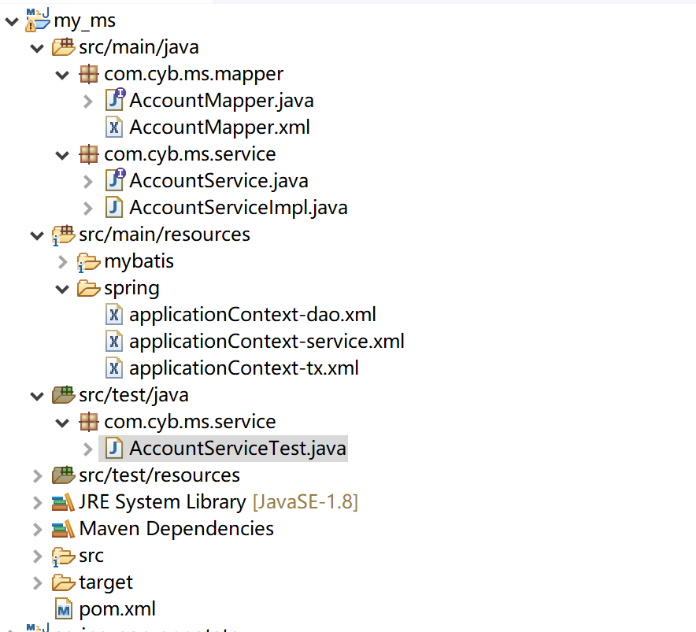
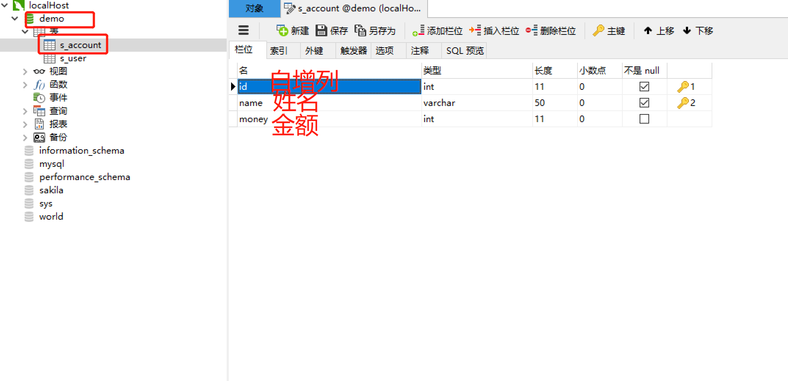
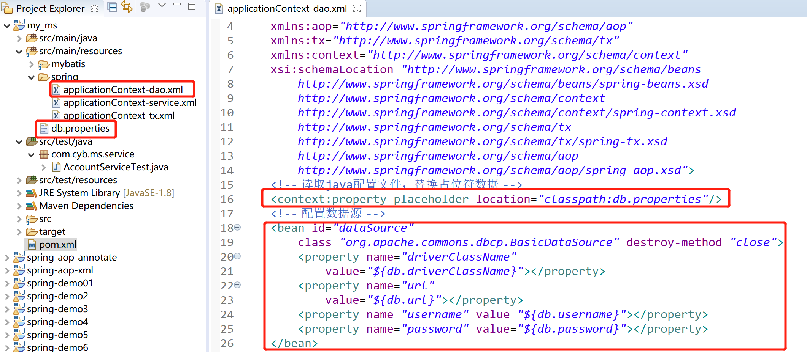
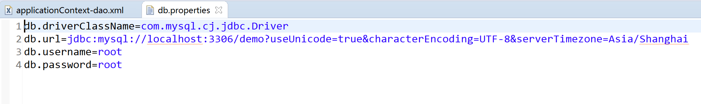

<project xmlns="http://maven.apache.org/POM/4.0.0"
xmlns:xsi="http://www.w3.org/2001/XMLSchema-instance"
xsi:schemaLocation="http://maven.apache.org/POM/4.0.0 http://maven.apache.org/xsd/maven-4.0.0.xsd">
<modelVersion>4.0.0</modelVersion>
<groupId>my_ms</groupId>
<artifactId>my_ms</artifactId>
<version>0.0.1-SNAPSHOT</version>
<!-- 持久层依赖：mysql驱动、dbcp连接池、mybatis、mybatis和spring整合依赖、spring依赖 -->
<dependencies>
<!-- spring ioc组件需要的依赖包 -->
<dependency>
<groupId>org.springframework</groupId>
<artifactId>spring-beans</artifactId>
<version>5.2.1.RELEASE</version>
</dependency>
<dependency>
<groupId>org.springframework</groupId>
<artifactId>spring-core</artifactId>
<version>5.2.1.RELEASE</version>
</dependency>
<dependency>
<groupId>org.springframework</groupId>
<artifactId>spring-context</artifactId>
<version>5.2.1.RELEASE</version>
</dependency>
<dependency>
<groupId>org.springframework</groupId>
<artifactId>spring-expression</artifactId>
<version>5.2.1.RELEASE</version>
</dependency>
<!-- 基于AspectJ的aop依赖包 -->
<dependency>
<groupId>org.springframework</groupId>
<artifactId>spring-aspects</artifactId>
<version>5.2.1.RELEASE</version>
</dependency>
<dependency>
<groupId>aopalliance</groupId>
<artifactId>aopalliance</artifactId>
<version>1.0</version>
</dependency>
<!-- spring 事务管理和JDBC依赖包 -->
<dependency>
<groupId>org.springframework</groupId>
<artifactId>spring-tx</artifactId>
<version>5.2.1.RELEASE</version>
</dependency>
<dependency>
<groupId>org.springframework</groupId>
<artifactId>spring-jdbc</artifactId>
<version>5.2.1.RELEASE</version>
</dependency>
<!-- spring 单元测试组件包 -->
<dependency>
<groupId>org.springframework</groupId>
<artifactId>spring-test</artifactId>
<version>5.2.1.RELEASE</version>
<scope>test</scope>
</dependency>
<!-- 单元测试Junit -->
<dependency>
<groupId>junit</groupId>
<artifactId>junit</artifactId>
<version>4.12</version>
<scope>test</scope>
</dependency>
<!-- mysql驱动 -->
<dependency>
<groupId>mysql</groupId>
<artifactId>mysql-connector-java</artifactId>
<version>8.0.18</version>
</dependency>
<!-- dbcp连接池依赖包 -->
<dependency>
<groupId>commons-dbcp</groupId>
<artifactId>commons-dbcp</artifactId>
<version>1.4</version>
</dependency>
<dependency>
<groupId>javax.annotation</groupId>
<artifactId>javax.annotation-api</artifactId>
<version>1.3.1</version>
</dependency>
<!-- mybatis依赖 -->
<dependency>
<groupId>org.mybatis</groupId>
<artifactId>mybatis</artifactId>
<version>3.5.3</version>
</dependency>
<!-- mybatis-spring整合依赖 -->
<dependency>
<groupId>org.mybatis</groupId>
<artifactId>mybatis-spring</artifactId>
<version>2.0.3</version>
</dependency>
</dependencies>
<!-- 业务层依赖：aop相关依赖 -->
<build>
<plugins>
<!-- 配置Maven的JDK编译级别 -->
<plugin>
<groupId>org.apache.maven.plugins</groupId>
<artifactId>maven-compiler-plugin</artifactId>
<version>3.2</version>
<configuration>
<source>1.8</source>
<target>1.8</target>
<encoding>UTF-8</encoding>
</configuration>
</plugin>
</plugins>
</build>
</project>路径：src/main/resources/spring/applicationContext-dao.xml
<?xml version="1.0" encoding="UTF-8"?>
<beans xmlns="http://www.springframework.org/schema/beans"
xmlns:xsi="http://www.w3.org/2001/XMLSchema-instance"
xmlns:aop="http://www.springframework.org/schema/aop"
xmlns:tx="http://www.springframework.org/schema/tx"
xmlns:context="http://www.springframework.org/schema/context"
xsi:schemaLocation="http://www.springframework.org/schema/beans
http://www.springframework.org/schema/beans/spring-beans.xsd
http://www.springframework.org/schema/context
http://www.springframework.org/schema/context/spring-context.xsd
http://www.springframework.org/schema/tx
http://www.springframework.org/schema/tx/spring-tx.xsd
http://www.springframework.org/schema/aop
http://www.springframework.org/schema/aop/spring-aop.xsd">
<!-- 配置数据源 -->
<bean id="dataSource"
class="org.apache.commons.dbcp.BasicDataSource" destroy-method="close">
<property name="driverClassName"
value="com.mysql.cj.jdbc.Driver"></property>
<property name="url"
value="jdbc:mysql://localhost:3306/demo?useUnicode=true&characterEncoding=UTF-8&serverTimezone=Asia/Shanghai"></property>
<property name="username" value="root"></property>
<property name="password" value="root"></property>
</bean>
<!-- 配置SqlSessionFactory -->
<bean id="sqlSessionFactory"
class="org.mybatis.spring.SqlSessionFactoryBean">
<!-- 注入dataSource -->
<property name="dataSource" ref="dataSource"></property>
<!-- mybatis批量别名配置 -->
<property name="typeAliasesPackage" value="com.cyb.ms.po"></property>
<!-- 注入mybatis的全局配置文件路径(该部分可以被省略) -->
<!-- <property name="configLocation" value="mybatis/SqlMapConfig.xml"></property> -->
</bean>
<!-- 相当于配置之前的AccountDao持久层bean -->
<!-- 配置Mapper代理对象方式一： MapperFactoryBean -->
<!-- 通过MapperFactoryBean生成的代理对象，一次只能针对一个接口进行生成 -->
<!-- 注意事项：mapper接口类和mapper映射文件同包同名 -->
<bean id="accountMapper"
class="org.mybatis.spring.mapper.MapperFactoryBean">
<!-- 注入SqlSessionFactory -->
<property name="sqlSessionFactory" ref="sqlSessionFactory"></property>
<!-- 注入目标接口类 -->
<property name="mapperInterface"
value="com.cyb.ms.mapper.AccountMapper"></property>
</bean>
</beans><?xml version="1.0" encoding="UTF-8"?>
<beans xmlns="http://www.springframework.org/schema/beans"
xmlns:xsi="http://www.w3.org/2001/XMLSchema-instance"
xmlns:aop="http://www.springframework.org/schema/aop"
xmlns:tx="http://www.springframework.org/schema/tx"
xmlns:context="http://www.springframework.org/schema/context"
xsi:schemaLocation="http://www.springframework.org/schema/beans
http://www.springframework.org/schema/beans/spring-beans.xsd
http://www.springframework.org/schema/context
http://www.springframework.org/schema/context/spring-context.xsd
http://www.springframework.org/schema/tx
http://www.springframework.org/schema/tx/spring-tx.xsd
http://www.springframework.org/schema/aop
http://www.springframework.org/schema/aop/spring-aop.xsd">
<!-- 配置数据源 -->
<bean id="dataSource"
class="org.apache.commons.dbcp.BasicDataSource" destroy-method="close">
<property name="driverClassName"
value="com.mysql.cj.jdbc.Driver"></property>
<property name="url"
value="jdbc:mysql://localhost:3306/demo?useUnicode=true&characterEncoding=UTF-8&serverTimezone=Asia/Shanghai"></property>
<property name="username" value="root"></property>
<property name="password" value="root"></property>
</bean>
<!-- 配置SqlSessionFactory -->
<bean id="sqlSessionFactory"
class="org.mybatis.spring.SqlSessionFactoryBean">
<!-- 注入dataSource -->
<property name="dataSource" ref="dataSource"></property>
<!-- mybatis批量别名配置 -->
<property name="typeAliasesPackage" value="com.cyb.ms.po"></property>
<!-- 注入mybatis的全局配置文件路径(该部分可以被省略) -->
<!-- <property name="configLocation" value="mybatis/SqlMapConfig.xml"></property> -->
</bean>
<!-- 配置Mapper代理对象方式二：MapperScannerConfigurer -->
<!-- 批量代理对象的生成 -->
<bean class="org.mybatis.spring.mapper.MapperScannerConfigurer">
<!-- 指定需要生成代理的接口所在的包名 -->
<property name="basePackage" value="com.cyb.ms.mapper"></property>
<!-- 注意事项：不要配置SqlSessionFactory -->
<!-- <property name="sqlSessionFactory" ref=""></property> -->
</bean>
</beans>路径：src/main/resources/spring/applicationContext-service.xml
<?xml version="1.0" encoding="UTF-8"?>
<beans xmlns="http://www.springframework.org/schema/beans"
xmlns:xsi="http://www.w3.org/2001/XMLSchema-instance"
xmlns:aop="http://www.springframework.org/schema/aop"
xmlns:tx="http://www.springframework.org/schema/tx"
xmlns:context="http://www.springframework.org/schema/context"
xsi:schemaLocation="http://www.springframework.org/schema/beans
http://www.springframework.org/schema/beans/spring-beans.xsd
http://www.springframework.org/schema/context
http://www.springframework.org/schema/context/spring-context.xsd
http://www.springframework.org/schema/tx
http://www.springframework.org/schema/tx/spring-tx.xsd
http://www.springframework.org/schema/aop
http://www.springframework.org/schema/aop/spring-aop.xsd">
<!-- 扫描业务bean -->
<context:component-scan
base-package="com.cyb.ms.service"></context:component-scan>
</beans>路径:src/main/resources/spring/applicationContext-tx.xml
<?xml version="1.0" encoding="UTF-8"?>
<beans xmlns="http://www.springframework.org/schema/beans"
xmlns:xsi="http://www.w3.org/2001/XMLSchema-instance"
xmlns:aop="http://www.springframework.org/schema/aop"
xmlns:tx="http://www.springframework.org/schema/tx"
xmlns:context="http://www.springframework.org/schema/context"
xsi:schemaLocation="http://www.springframework.org/schema/beans
http://www.springframework.org/schema/beans/spring-beans.xsd
http://www.springframework.org/schema/context
http://www.springframework.org/schema/context/spring-context.xsd
http://www.springframework.org/schema/tx
http://www.springframework.org/schema/tx/spring-tx.xsd
http://www.springframework.org/schema/aop
http://www.springframework.org/schema/aop/spring-aop.xsd">
<!-- 配置平台事务管理器 -->
<bean id="transactionManager"
class="org.springframework.jdbc.datasource.DataSourceTransactionManager">
<property name="dataSource" ref="dataSource"></property>
</bean>
<!-- 事务通知 -->
<!-- tx:advice:对应的处理器类是TransactionInterceptor类(实现了MethodInterceptor) -->
<!-- TransactionInterceptor类实现事务是通过transaction-manager属性指定的值进行事务管理 -->
<tx:advice id="txAdvice"
transaction-manager="transactionManager">
<!-- 设置事务管理信息 -->
<tx:attributes>
<!-- 增删改使用REQUIRED事务传播行为 -->
<!-- 查询使用read-only -->
<tx:method name="transfer*" propagation="REQUIRED"
isolation="DEFAULT" />
</tx:attributes>
</tx:advice>
<!-- 基于AspectJ+XML方式实现声明式事务 -->
<aop:config>
<!-- aop:advisor标签使用的是传统spring aop开发方式实现的 -->
<!-- spring已经实现了该增强功能，spring使用的是实现MethodInterceptor接口的方式实现的 -->
<aop:advisor advice-ref="txAdvice"
pointcut="execution(* *..*.*ServiceImpl.*(..))" />
</aop:config>
</beans>package com.cyb.ms.mapper;
import org.apache.ibatis.annotations.Param;
public interface AccountMapper {
void update(@Param("name") String name, @Param("money") int money);
int queryMoney(String name);
}<?xml version="1.0" encoding="UTF-8"?>
<!DOCTYPE mapper
PUBLIC "-//mybatis.org//DTD Mapper 3.0//EN"
"http://mybatis.org/dtd/mybatis-3-mapper.dtd">
<mapper namespace="com.cyb.ms.mapper.AccountMapper">
<!-- 查询 -->
<select id="queryMoney" parameterType="string" resultType="int">
select money from s_account where name = #{name}
</select>
<!-- 修改 -->
<update id="update" parameterType="map">
UPDATE S_ACCOUNT SET money=#{money} WHERE name = #{name}
</update>
</mapper>package com.cyb.ms.service;
public interface AccountService {
void transfer(String from, String to, int money);
}package com.cyb.ms.service;
import javax.annotation.Resource;
import org.springframework.stereotype.Service;
import com.cyb.ms.mapper.AccountMapper;
@Service
public class AccountServiceImpl implements AccountService {
@Resource
private AccountMapper mapper;
@Override
public void transfer(String from, String to, int money) {
// 先查询from账户的钱
int fromMoney = mapper.queryMoney(from);
// 对from账户进行扣钱操作
mapper.update(from, fromMoney - money);
// 先查询to账户的钱
int toMoney = mapper.queryMoney(to);
// 对to账户进行加钱操作
mapper.update(to, toMoney + money);
}
}package com.cyb.ms.service;
import javax.annotation.Resource;
import org.junit.Test;
import org.junit.runner.RunWith;
import org.springframework.test.context.ContextConfiguration;
import org.springframework.test.context.junit4.SpringJUnit4ClassRunner;
@RunWith(SpringJUnit4ClassRunner.class)
@ContextConfiguration(locations = { "classpath:spring/applicationContext-*.xml"})
public class AccountServiceTest {
@Resource
private AccountService Service;
@Test
public void testTransfer() {
Service.transfer("老公", "老婆", 1000);
}
}
mysql数据库版本：8.0.18

配置文件替换数据库连接字符串

